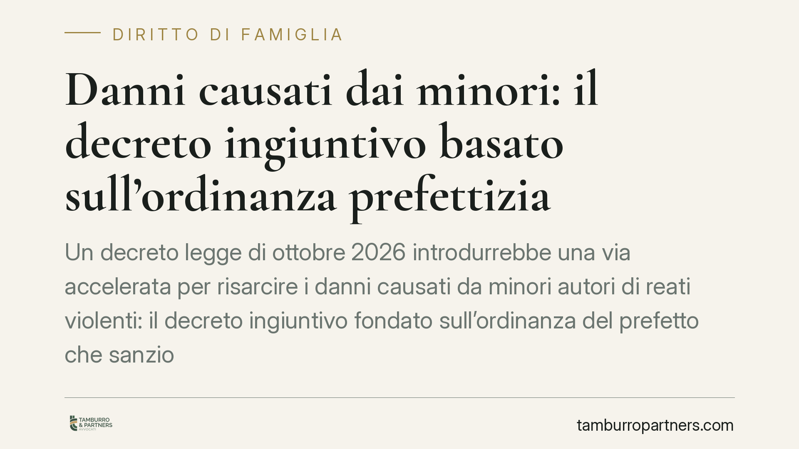

Danni causati dai minori: il decreto ingiuntivo basato sull'ordinanza prefettizia
Un decreto legge di ottobre 2026 introdurrebbe una via accelerata per risarcire i danni causati da minori autori di reati violenti: il decreto ingiuntivo fondato sull'ordinanza del prefetto che sanziona i genitori. Trattandosi di norma recentissima e soggetta a conversione, occorre cautela. Vediamo presupposti, termini di impugnazione e margini di difesa per le famiglie coinvolte.

Una premessa necessaria sulla fonte
L'intervento normativo di cui si discute è contenuto nel d.l. 20 ottobre 2026, n. 190. Si tratta di un decreto legge: è efficace da subito, ma deve essere convertito in legge dal Parlamento entro sessanta giorni, pena la decadenza con effetto retroattivo (art. 77 Cost.). In sede di conversione le disposizioni potrebbero essere modificate, integrate o non confermate.
Ne consegue che il quadro qui descritto va considerato provvisorio. Prima di qualsiasi decisione è indispensabile verificare se il decreto sia stato convertito e con quale testo definitivo, nonché controllare numero, data e contenuto effettivo dell'atto ricevuto.
Inquadramento normativo
La responsabilità dei genitori per il fatto illecito del figlio minore trova fondamento nell'art. 2048 c.c. La norma chiama a rispondere i genitori che esercitano la responsabilità genitoriale per il danno cagionato dal figlio minore con lui coabitante. Non basta quindi la convivenza anagrafica formale: rileva l'effettiva coabitazione, presupposto del dovere di vigilanza ed educazione.
La responsabilità è presunta: i genitori possono liberarsi solo provando di non aver potuto impedire il fatto (la cosiddetta prova liberatoria), dimostrando una vigilanza e un'educazione adeguate all'età e al carattere del minore.
La novità del d.l. 190/2026 è sul piano processuale. Il decreto consentirebbe al danneggiato di ottenere un decreto ingiuntivo sulla base dell'ordinanza con cui il prefetto sanziona i genitori e dispone il risarcimento, nei casi di reati violenti commessi dal minore.
Sul piano del codice di rito occorre tenere distinte tre norme:
- art. 633 c.p.c.: fissa i presupposti del procedimento monitorio (il credito deve essere certo, liquido ed esigibile);
- art. 634 c.p.c.: individua le prove scritte idonee a sorreggere l'ingiunzione. È qui che si collocherebbe l'ordinanza prefettizia, elevata dal decreto a prova scritta a fini monitori;
- art. 641 c.p.c.: stabilisce il termine per l'opposizione, pari a quaranta giorni dalla notifica del decreto, salvo che il giudice lo riduca o lo aumenti nei casi di legge.
Implicazioni pratiche per i genitori
Il meccanismo ipotizzato è a doppio binario e lavora su due atti distinti, ciascuno con un proprio regime di impugnazione.
Il primo atto è l'ordinanza del prefetto. È un provvedimento sanzionatorio amministrativo. Per questa categoria di provvedimenti il modello di riferimento è quello dell'opposizione disciplinata dalla L. 689/1981, con termini brevi (in genere trenta giorni) davanti al giudice competente. Poiché il d.l. 190/2026 potrebbe prevedere un regime speciale, il termine effettivo va letto sull'atto ricevuto: l'ordinanza deve indicare autorità e termine per impugnare. Se l'ordinanza non viene contestata nei termini, essa si consolida e diventa la base del successivo monitorio.
Il secondo atto è il decreto ingiuntivo. Una volta notificato, i genitori hanno quaranta giorni per proporre opposizione ai sensi dell'art. 641 c.p.c., instaurando un giudizio ordinario nel quale far valere, tra l'altro, la prova liberatoria dell'art. 2048 c.c. Il decreto ingiuntivo, va ricordato, ha natura provvisoria: finché non diventa definitivo può essere rimesso in discussione con l'opposizione.
Il punto critico è il collegamento tra i due piani. Se l'ordinanza prefettizia non è stata impugnata, difendersi solo in sede di opposizione al decreto ingiuntivo può risultare più difficile. Per questo la tempestività sul primo atto è decisiva.
Cosa fare in concreto
- Leggere subito l'atto ricevuto e distinguere se si tratta di ordinanza prefettizia o di decreto ingiuntivo: i termini e le difese sono diversi.
- Annotare la data di notifica e il termine di impugnazione indicato nell'atto. Per l'ordinanza, verificare il termine specifico; per il decreto ingiuntivo, calcolare i quaranta giorni dell'art. 641 c.p.c.
- Non lasciar decorrere i termini sull'ordinanza prefettizia: la mancata opposizione può precludere difese nella fase successiva.
- Raccogliere gli elementi utili alla prova liberatoria ex art. 2048 c.c.: documentazione su percorso educativo, controllo e misure adottate verso il minore.
- In caso di dubbio sullo stato della norma o sui termini, è opportuno rivolgersi tempestivamente a un legale per una valutazione sull'atto concreto.
Un'osservazione di metodo
Lo strumento, se confermato in sede di conversione, risponde all'esigenza di accelerare il ristoro delle vittime di reati violenti. Resta però da misurare l'equilibrio con il diritto di difesa dei genitori: ancorare un titolo esecutivo a un'ordinanza amministrativa impone che i termini e le modalità di contestazione siano chiari e realmente accessibili. La prudenza, in questa fase, è d'obbligo.
Disclaimer
Contributo informativo a cura di Tamburro & Partners - Avv. Giuseppe Tamburro. Non costituisce parere legale.
Ogni famiglia ha il suo equilibrio.
Separazione, divorzio, affidamento, assegno: se vuoi un confronto riservato su una specifica situazione, scrivi allo studio. Ti rispondiamo entro un giorno lavorativo.